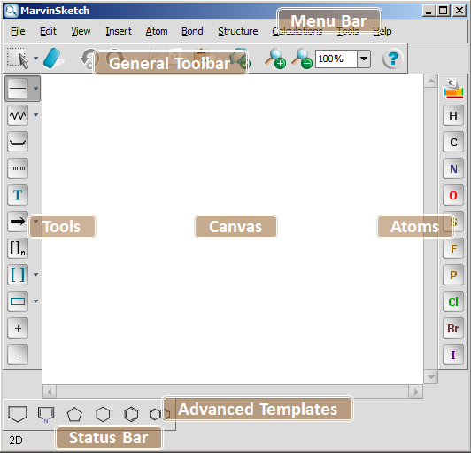

MarvinSketch Graphical User Interface
Table of Contents
The default layout of the MarvinSketch user interface is shown in the following picture.

It consists of the following primary components:
- Menu Bar: It is located at the top of the main frame, containing menu titles that describe the content of each menu.
- Canvas: This is the main area where chemical structures, queries and reactions are drawn.
- General Toolbar: This toolbar contains buttons for freqently used commands.
- Tools Toolbar: Contains basic elements for stucture drawing like bond, chain, reaction arrow, graphics, etc.
- Atoms Toolbar: Location of the most freqent atom types and the Periodic System button.
- Advanced Templates Toolbar: This special toolbar is a container of structure templates. The templates are rotatable by pressing and holding down the left mouse button while dragging.
- Status Bar: Shows file status, contains navigation buttons and the dimension button.
The Status Bar appears at the bottom of the main frame, and unlike toolbars, it cannot be customized or moved.
Some buttons of the Status Bar appear dynamically when you invoke the corresponding command, like enabling multipage molecular documents.
Return to Top
Copyright © 1998-2012
ChemAxon Ltd.
http://www.chemaxon.com/marvin